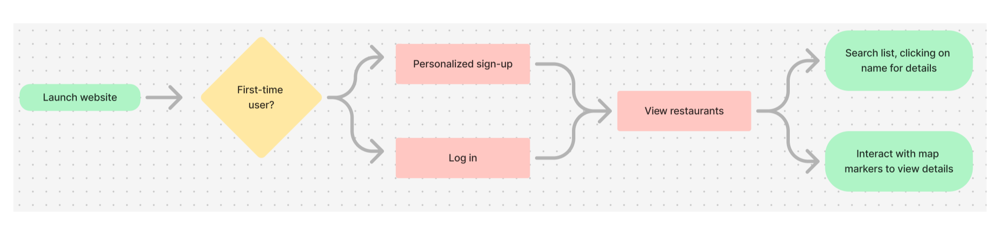
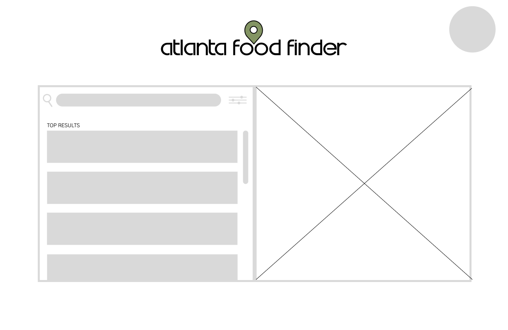

Process Demonstration
This page details the process followed to build the project, including brainstorming sessions, development sprints, testing, and iterations.
- Planning Phase: Outlining the Project Goals
- Design Phase: Creating Mockups and Prototypes
- Development Phase: Building the Project
- Testing & Deployment: Ensuring Functionality
This project consisted of two sprints, where the first sprint addressed user stories A-C and the second addressed D-F. For initial organization, the team created a shared Google Calendar, Trello board, and Discord server to ensure that our communication remained timely and organized.
At the beginning of each sprint, the team held a planning meeting to discuss the user stories that would be addressed in the sprint. We created a specific channel in the Discord to provide each other with daily updates, and used the Trello to tag/delegate work and keep each other up to date.
At the end of each sprint, the team held meetings to review and reflect on how we performed. At the end of the 1st sprint, we decided that our communication needed to improve, so we created a voice channel in the Discord called "drop-in work" where we could all hang out and work together at any time, to avoid the pressure of overly-planned work sessions. This greatly increased our productivity.
To begin, we used Figma to create a basic user flow and wireframes for the UI. We then created a basic brand identity and applied it to the wireframes to create prototypes.
The basic decisions regarding the branding and setup were made with the application's intentions and functionality in mind. We wanted it to be clean and user-friendly, so we kept the colors and user flow simple to avoid overwhelming users. This also involved using recognizable icons such as the filter button.
This stage is where all of our pre-planning and delegation came in handy. We initially struggled at first with the learning curve regarding Git and GitHub, but we quickly learned how to use it effectively. We used the framework of the Django tutorial to initialize our project.
We broke up each user story into smaller, more manageable tasks and made sure to have other team members review our code before merging anything to the repository. This gave members a chance to share any challenges they were facing and helped us stay up to date with our progress as well as the things our teammates were working on.
We made sure to use Git and branches effectively to test our work before merging it into main to avoid any conflicts. The process of testing was extensive and occurred throughout the creation of the project, rather than solely at the end.